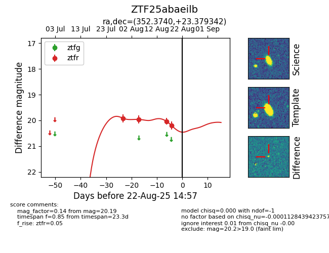

Target ZTF25abaeilb at 2025-08-22 15:16, see:
FINK: fink-portal.org/ZTF25abaeilb
Lasair: lasair-ztf.lsst.ac.uk/objects/ZTF25abaeilb
ALeRCE: alerce.online/object/ZTF25abaeilb
alt names
ZTF25abaeilb (ztf,alerce)
coordinates:
equatorial (ra, dec) = (352.3740,+23.37934)
galactic (l, b) = (99.6134,-35.75459)
photometry
last atlaso=19.92, ztfr=20.19
1 atlaso, 4 ztfr detections
